{kind=link}
{kind=link}
{kind=link}
{kind=link}
{kind=link}
{kind=link}

We marked December 31, 1999 on our calendars as being an excellent excuse to have a rolling celebration in the streets. The city would be filled with revelers, and the police would have their hands full. Surely we would be able to ride our bikes and not get hassled by the man. The cops had set up a fortified perimeter downtown, guarded by two hundred officers. Civilians could only enter or exit at one of four checkpoints, after being searched for alcohol or anything else that wasn't permitted. The people of Portland were expected to allow themselves to be herded into this camp, and we knew that huge flocks of them would actually do it. Portland is like that. We figured that we could stay on the other side of the river and ride our exploding bikes into the new year, with thousands of rowdies providing interference for the rest of the cops.
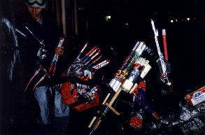 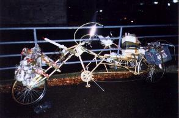
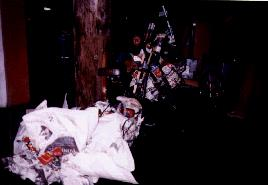 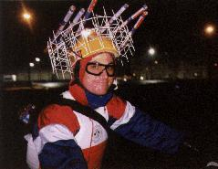
For two weeks, we worked hard to bring as many bikes into working condition as we could. Our goal was to assemble the forty choppers of the apocalypse. We were able to refurbish about twenty, and barely got everything together in time. Denk made new wheels for the Keg Trike, which had been sitting in the rain for four years in need of a unique pair of hubs, and Big B. made a trailer for it out of a bed frame. Megulon-5 created Plopulator Son Of Chopigator to replace the ride that we had all been missing for a long time. Everyone added tubes and cargo space to their bikes, and lashed chickenwire frames on top of that.
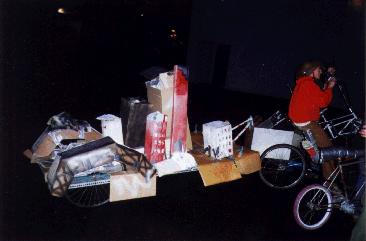
On New Year's Eve, we took most of the bikes to Critical Mass for a final
shakedown cruise and to let people know where the action would be, and
that ride was eerily calm. After a few miles, we ditched them to prepare
ourselves, and rode to the Lucky House, where we had stashed our
alcohol, newspapers, kerosene, and an obscene amount of fireworks that
we had smuggled in from an island of semi-sovereignty to the north.
The next hour was spent
frantically drinking and stuffing our cargo spaces full of kindling
and fireworks. Big B. put a karaoke machine in the trike, powered by
a car battery, and erected
a very large and flammable model of Portland on the trailer. When we
were nearly done, three cop cars showed up, but we somehow talked them
down and they left us alone. We decided to quickly finish loading and
get out of there, but it took us about half an hour to move a few
blocks away from the scene, because some of our bikes were extremely
overloaded. Son of Chopigator's stem couldn't handle the weight on the
forks - the front would flop while the handlebars just sat there.
Ordnance was distributed to other bikes until the S.O.C. could ride,
but he still lacked any kind of maneuverability. Turns had to be chosen
wisely, and U-turns were impossible without stopping and backing
up. Riders were struggling all around, but we have grown strong from
pushing far too much metal around even when we have no cargo, and we
had Big B. belting out the hits when he could catch his breath.
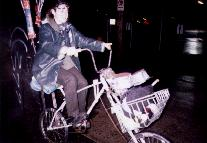
For safety from the law, we split up into several sorties, and reached
the second checkpoint in time. For a while, industrial southeast
Portland was our playground. We stayed in medium-sized clots and
milled about. Truly, this part of our evening cannot be imagined, but
try to envision blocks and blocks of abandoned streets, intermittently
lit and roofed by bridges, with every intersection containing a
shadowy whirling mess of bicycles. One cell would see another a block
away, meet up with them, mingle and compare the contents of their
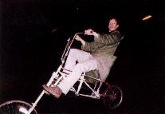
flasks, and then part ways in new groups. It was a most beautiful
experience - a chopper utopia.
Friends and strangers showed up. We saw some gnarly old BMX riders,
and met a kid on a bike towing his brother on a pair of skates,
neither of whom could fully understand the idea of riding an exploding
bike, and who asked us over and over again exactly how it was going to
happen.
Eventually we gathered at the intended site for the final battle,
which was the skate park under the Burnside bridge, but there wasn't
much room for our wallowing bikes. The streets were also crisscrossed
with abandoned rails, and someone was said to be freaking out in a
nearby
parking lot. So we moved south towards the underside of the Hawthorne
bridge. That was when the first cop spotted us. We split up and he
ended up tailing the innocent, non-explodable choppers, but for most of
us, this escape was short-lived. He called for backup, and the area
was quickly crawling with police - eventually about twenty cars in
all. Soon there were enough to trap most groups of riders between two
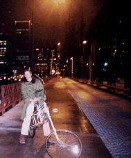
or more cars, and most cars disgorged a few cops to chink up the
cracks. Many of us fled, but many still were captured one by one,
including all but one of the slow haulers with their deadly cargo.
Instead of spending the new year on exploding bikes, we spent it in
the backs of cop cars.
Oh well. One rider escaped to detonate his charges on the other side
of town, and that was all that we truly needed. Our only regret is
for those poor children who were unable to see what an exploding bike
looks like.
The party didn't end up as we planned, but at least it didn't end
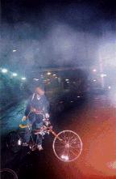
then. While the first of us were interacting with the police, we got
to hear the exciting struggles of our comrades over their radios. The
police referred to us as the Critical Mass cyclists - they either
knew that we had been spotted on the ride, or just assumed that anyone
who would cause a ruckus on a bike was a CM rider. This made
listening to their radio from the back of the car kind of weird while
they were mopping us up. "We don't need any more cars down here,
we've broken up the Critical Mass bicyclists." Since the cops say so,
we can claim to being the last CM ride of 1999, unless some Pacific
islander has a later claim.
The cops scratched their heads in wonder at the ancient
Chinese celebratory technology melded with our futuristic machineries
of joy. Once cop tried to pick up Son of Chopigator. She
dropped it, clutching her back, before even lifting it upright.
The cops thought that this was hilarious, and laughed at us for riding
such heavy beasts.
They poured out our bottles of
whiskey and thermoses of coffee, which was sad, and began dismantling
our bikes with their little cop handytools, which was sadder still.
They were not happy when they found out that our wads of newspaper had
been soaked in kerosene, and called the bomb disposal unit. Then the
paddy wagon arrived and we were professionally marched into it. They
had captured a few spectators - pretty much any cyclist in the area
who didn't flee fast enough was swept up - but after being cuffed and
stuffed, everyone riding a normal bike was released on the scene,
except for one innocent bystander who had a foreign accent. Twelve
riders and bikes were arrested, the largest roundup that we have ever
suffered.
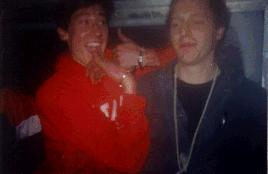
When we reached the station, we saw what our problem was. The cops
there were lounging around with nothing to do! Hundreds of thousands
of Portland citizens had let us down by acting calm and staying home,
while every officer was on duty. They sat around with their unused riot
quelling equipment and chatted with us for hours while we were
processed. They asked us a lot of questions about Critical Mass,
mostly not digging for information but genuinely curious. We got the
usual "I'm a cyclist myself..." line. One guy asked us what CM did
when it wasn't doing the monthly ride, and we of course told him that
the monthly ride was CM. Most of them assumed that the goal of CM
was simply to eliminate cars, and to do so by pissing off drivers.
Even after some of us were released and were walking by the front door
of the station, a cop on a smoke break said, "so tell me something
about Critical Mass, what's the point?"
Although they had taken piles of pictures of us, the cops had a hard
time matching riders to bikes on the property receipts. This was
partially because we had trouble identifying our bikes on account
of our being offended by their unappreciative descriptions. "Homemade
gold bicycle with wooden seat?" Come on, show some appreciation,
that's an indestructible homemade golden bicycle with a ten foot
wheelbase, wooden saddle, and large cargo capacity fore and aft, rear
cargo substitutable for two pillion seats! They also called most
bikes "Sting-Rays", which confused us. "Who had the red Sting-Ray
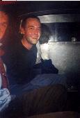
with the newspaper-stuffed statue of the Virgin Mary on the front?"
"Mine had the Virgin on the front, but it wasn't a Sting-Ray, and
it wasn't red, it was kind of a
rusty silver".
Now, let a few things be said about being arrested that might not be
shared by all of those involved. Most of us didn't have a problem
shooting the breeze with those cops while we were in the station. On
one hand, we were their property, and even if these weren't the cops
that had taken us in, they would have if they had been there. The
experience of being handcuffed and having one's pockets emptied out on the
ground is a humiliating one, and anyone who goes trustingly into that
situation is naive. On the other hand, the cops in the station
treated us like people,
so we treated them like people back. It was one of those situations
where regardless of one's thoughts on the matter, it would be
pointless to be unfriendly. Two riders in the back of the wagon, who
will remain unnamed,
weren't able to stop giving lip to the cops until we got them to shut
up. How many brains does it take to realize that it isn't a good idea
to harass an armed individual while one's hands are tied behind one's
back? This turned out to be convenient, however, because the rest of
us didn't have to play good detainee/bad detainee.
What the situation boiled down to was that they stole our fireworks,
took us to the edge of town, charged us with misdemeanors, and told us
that we could get our bikes on Monday, and those who went along with
it weren't busted for our various moving violations or victimless
crimes in our pockets. But hopefully everyone involved can detect the
creepy undercurrent to the whole business. We were a bunch of white
kids, and we weren't riding through those neighborhoods that the cops
feel that they need to form an occupying presence in. During
processing, one cop told his prisoner that his "teeth were straight",
by way of assurance. If we had been a different color, wearing
different clothes, or in a different part of town, who knows? Those
cops, or others, might have felt the need to grind us down from the
start. We might have been on our faces instead of on our feet. And
lest we sound complacent instead of just cynical, some of us have at
times found ourselves cuffed and thrown to our faces, charged with
serious and completely fabricated crimes, even while looking normal
and riding normal bikes.
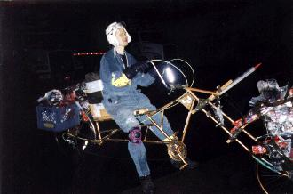 So much for those who were captured. There were a few interesting escape stories. "John Doe's" bike was quite loaded and slow, but he was able to avoid police attention until they were too busy arresting the rest of us to bother with him, and he gradually rode away. "Timmy" was riding up a slight incline on Granddaddy when a cop car raced up the upcoming cross street and attempted to cut him off. He jinked left, and the car squealed into reverse to intercept. He jinked right, and the car again raced forward. He jinked left yet again and jumped onto the sidewalk. The car slammed backwards and tried to pin him against the building, but the driver didn't have the guts to smack the car against the bricks, and "Timmy" avoided injury and arrest. He rode out from under the bridge and up to Grand, and encountered "Speedy". "Speedy" had ditched his bike to climb the stairway to the bridge sidewalk, then ran down the ramp to Hawthorne. Unfortunately, right when he reached the end of the ramp, a contingent of four motorcycle cops came buzzing by, and split up to encircle him. Luckily, he was able to alternate running and hiding, but we haven't recovered his bike. If anyone finds it, we really want that mag wheel back, contact us and we'll let you keep the rest of bike without fear of retribution. "Speedy's" situation made it clear to "Timmy" that any choppered individual on the streets of Portland was fair game, so he rode Granddaddy up Hawthorne, seeking the quiet, residential maze of death which is Ladd's Addition. A cop car found him and pursued "Timmy" to a nearby gas station, and incredibly enough, engaged him in a high-speed chase for four laps around the pumps! "Timmy" fought to keep control as his tiny front wheel skipped around those tight turns that are the bane of any chopper, and hoped that the car would hit something or make a mistake that would allow him to break for it. The car's window was open, and he could hear the driver's heavy breathing and jangling keys a few feet away from him. Then the cop jumped out with his truncheon and gave chase on foot. It was "Timmy's" moment of truth, since Granddaddy is faster than a runner once he's up to speed, but a runner has a higher acceleration. We are all proud that he was able to reach safety. Well done!
| 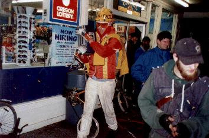 | Postscript. Y2.001K was a lot more fun. We only started out with a quarter the amount of fireworks we had the previous year, but we actually blew up twenty times as much as we were able to then. The firefighters showed up five minutes before the moment, watched us celebrate, and then told us to have a happy new year, and when their pretty red truck left, the cop car that was lurking behind it glared at us for a while before driving off. We had a nice party in the parking lot of the quickiemart because dammit, we can have fun wherever we want to. After getting kicked out of the dance party because we were enjoying ourselves more than everybody else, we dragged the skeet shooter to the top of Mount Tabor and hurled rocks at the rising sun. |
(Return to C.H.U.N.K. Operations)
| Copyright 2003 Megulon Five <megulon5@dclxvi.org>. |
|
This work is licensed under a Creative Commons License. | Last modified 9 October 2001. |